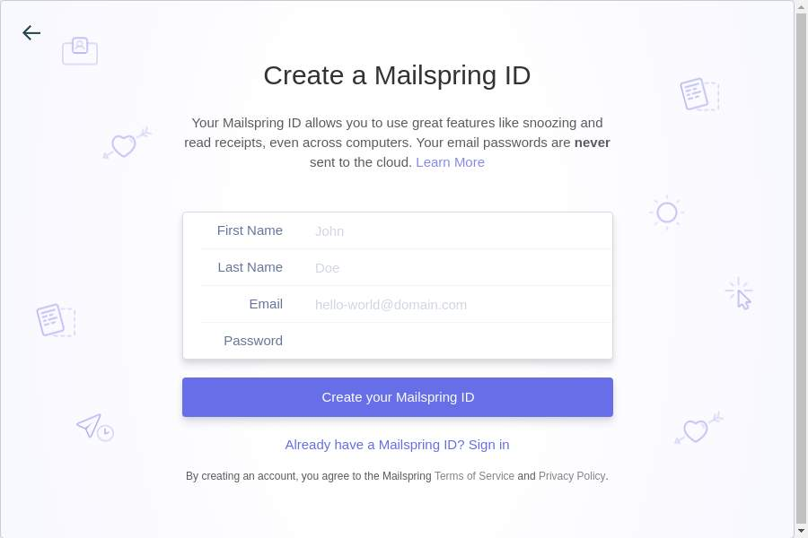

When a mail client isn't just a mail client
The case of Mailspring.
Today, I was in need of a mail client for testing a server. I didn’t want to use my usual one, since that one is overloaded with accounts already. Installing one of the other big and well-known mail clients or -suites didn’t sound too appealing either. So I went to the search engine of my distrust, and keyed in “simple imap client linux”, in hopes of being presented with a list of small and simple IMAP mail clients.
The first hit was Top 9 Best Email Clients for Linux on itsfoss.com. Well, okay, let’s have a look. First suggestion is Mailspring. It’s described as “built with open web technologies” (oh, great, it’s Chrome) and having features like “Unified Inbox”, “Contacts Management”, “Analytics & Tracking” and much more – yeah, okay, don’t care, as long as it can do IMAP.
Their site itself gushes about being the “best mail client”, “boosted productivity”, “gesture support” (really, now?), and of course, themes! Everyone loves some themes, right? Well, let’s download it. .rpm, .deb or a Snap are available for Linux. Since my work box (still) runs Ubuntu, this isn’t much of a brain-teaser. Two dpkg -is with an apt -f install in the middle later, I’m ready for action.
When I start it, the thing greeting me is a welcome screen, then kind of “First steps”, and then…an unskippable sign-up screen for a Mailspring ID. Seriously?

I had an inkling they might be squidding me, but no. To use Mailspring, you need a Mailspring ID. In an FAQ entry, aptly named What is a Mailspring ID and why do I need one?, they describe how you need one for the themes (Oh no!) and plugins, and to sync your settings across multiple devices – settings like mail snooze. I may be old-fashioned, but if I don’t want to be bothered by mails, I close the mail client. This has the major advantage of also working for messengers, RSS readers and so on.
Conclusion: Yeah, nah. Mailspring is out. Someone who requires me to create an account with them, just so I can use another account (mail, in this case) I have elsewhere has lost right from the start. Thanks, but no, thanks, especially after only telling me about the Mailspring ID business after I have downloaded and installed it.
apt remove mailspring